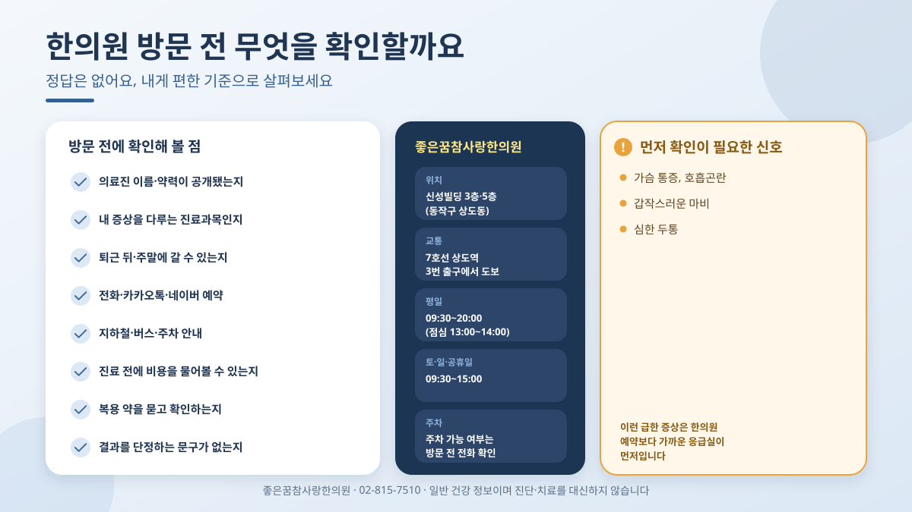

이종호 한의사 감수좋은꿈참사랑한의원 대표원장 (한의사 면허번호 19769)발행 2026-11-23 · 수정 2026-11-26
상도동·노량진 근처에서 한의원을 고를 때는 의료진 소개가 공개되어 있는지, 내 증상을 다루는 진료과목인지, 퇴근 뒤나 주말에 갈 수 있는지, 비용과 복용 약을 미리 물어볼 수 있는지를 확인해 보시면 좋습니다. 정해진 정답은 없으니 본인에게 편한 기준으로 살펴보세요.
왜 미리 확인하면 좋을까요
- 한의원 진료는 한 번에 끝나기보다 몇 차례 이어지는 경우가 많아, 오가기 편한 위치와 시간이 중요합니다.
- 복용 중인 약이 있다면 약을 어떻게 다루는지 설명을 듣는 것이 안전합니다.
- 무엇을 묻고 어떻게 살피는지 미리 알아 두면, 상담에서 궁금한 점을 정리하기 쉽습니다.
확인해 보면 좋은 점
- 의료진 소개: 진료하는 의료진의 이름과 약력이 공개되어 있는지
- 진료과목: 내가 고민하는 증상을 다루는 분야인지
- 진료 시간: 퇴근 뒤나 주말에 갈 수 있는지
- 예약과 문의: 전화, 카카오톡, 네이버 예약 가운데 편한 방법이 있는지
- 오시는 길: 지하철역과 버스, 주차를 안내하는지
- 비용 설명: 진료 전에 비용을 물어볼 수 있는 분위기인지
- 약 복용 확인: 복용 중인 약을 묻고 함부로 끊지 말라고 안내하는지
좋은꿈참사랑한의원의 경우
- 위치: 서울 동작구 만양로2길 2 신성빌딩 3층·5층(상도동). 7호선 상도역 3번 출구에서 약 200m 직진한 뒤 오거리에서 우회전해 약 200m 올라오시면 됩니다. (걷는 길)
- 노량진역(1·9호선) 3번 출구 근처 정류장에서 마을버스 동작01을 타고 신동아리버파크 정류장에서 내리면 건너편 3층입니다. (노량진역에서 오는 법)
- 주차: 가능 여부와 자리는 방문 전 전화(02-815-7510)로 확인해 주세요.
- 진료 시간: 평일 09:30~20:00(점심 13:00~14:00), 토·일·공휴일 09:30~15:00(점심시간 없음)
- 의료진: 이종호 대표원장, 조영기 수석진료원장, 정원영 진료원장
- 진료과목은 진료과목 안내에서 볼 수 있고, 진료 공간은 진료 공간 둘러보기와 원내 탕전 기록의 사진으로 미리 볼 수 있습니다.
- 2013년 상도동에서 문을 열었습니다.
먼저 이렇게 여쭙니다
좋은꿈참사랑한의원에서는 모든 분의 맥을 짚고, 맥을 짚으면서 이런 것들을 여쭙습니다.
- 어디가 언제부터, 어떤 상황에서 불편한지
- 복용 중인 약과 영양제
- 잠·소화 같은 몸 전체의 리듬
필요하다고 판단될 때 설진·복진이나 초음파 같은 방법을 더해 살핀 뒤 상태에 맞춰 침·약침·추나·한약 상담 등을 정합니다. 귀가 전에는 집에서 지켜볼 점과 다음에 확인할 일을 알려 드립니다.
이렇게 기록해 오시면 상담이 쉬워집니다
- 증상 메모: 언제부터, 어떤 상황에서 불편한지
- 복용 약 목록: 약 봉투 사진도 괜찮습니다
- 건강검진이나 병원 검사 결과지
이런 증상은 먼저 확인이 필요합니다
- 가슴 통증이나 숨이 차는 증상
- 갑자기 한쪽 팔다리에 힘이 빠지거나 말이 어눌해진 경우
이런 신호가 있으면 한의원보다 가까운 병원이나 응급실을 먼저 찾으세요.

여쭙는 것
- 어디가 언제부터, 어떤 상황에서 불편한지
- 복용 중인 약과 영양제
- 잠·소화 같은 몸 전체의 리듬
먼저 확인이 필요한 신호
- 가슴 통증이나 숨이 차는 증상
- 갑자기 한쪽 팔다리에 힘이 빠지거나 말이 어눌해진 경우
자주 묻는 질문
방문 전에 무엇을 확인하면 되나요?
의료진 소개, 진료 시간, 오가는 길, 비용과 복용 약에 대한 설명 방식을 확인해 보세요.
한 곳만 정해서 계속 가야 하나요?
그렇지 않습니다. 다만 같은 곳에서 이어서 진료받으면 지난 이야기를 이어서 묻기 쉽습니다.
비용은 언제 알 수 있나요?
진찰 뒤 진료 내용과 함께 안내해 드리며, 궁금한 점은 진료 전에도 편하게 물어보셔도 됩니다.
예약 없이 가도 되나요?
예약 없이 오실 때는 기다리실 수 있어 전화(02-815-7510)로 먼저 확인해 주세요. 네이버 예약으로 미리 시간을 정하셔도 됩니다.
좋은꿈참사랑한의원은 재진 때 지난번 이야기부터 이어서 여쭙니다. 진료시간과 예약은 오시는 길에서 확인하세요.
어디서 상담받을 수 있나요?
좋은꿈참사랑한의원은 서울 동작구 만양로2길 2 신성빌딩 3층·5층(서울 동작구 상도동, 7호선 상도역 3번 출구 근처)에 있습니다. 한의사 3명(이종호 대표원장, 조영기 수석진료원장, 정원영 진료원장)이 진료합니다. 진료시간은 평일 09:30~20:00(점심 13:00~14:00), 토·일·공휴일 09:30~15:00이며, 방문 전 전화로 확인을 권합니다. 예약은 네이버 예약, 카카오톡 상담, 전화 02-815-7510로 받습니다.
이 글은 일반적인 건강 정보이며 개인의 진단이나 치료를 대신하지 않습니다. 증상이 있거나 복용 중인 약이 있다면 진료를 통해 확인하세요. 치료 효과는 개인마다 다를 수 있습니다.
작성 기준: 일반적으로 알려져 있는 건강 정보를 참고해 정리했습니다(대표원장 감수). 증상 기록은 1~2주 동안 하루 1회, 비슷한 시간에 적어 오시면 지난 상태와 비교하기 쉽습니다.